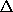

The composition of Lie transforms can be written as products of exponentials of Lie derivative operators. In general, Lie derivative operators do not commute. If A and B are non-commuting operators, then the exponents do not combine in the usual way:
So it will be helpful to recall some results about exponentials of non-commuting operators.
The commutator is bilinear and satisfies the Jacobi identity
which is true for all A, B, and C.
We introduce a notation A for the commutator with respect to the operator A:
In terms of the Jacobi identity is
We can check this term by term.
using e-C eC = I, the identity operator. Using the same trick, we find
More generally, if f can be represented as a power series then
For instance, applying this to the exponential function yields
Using equation (5.467), we can rewrite this as
Exercise 5.30. Commutators of Lie derivatives
a. Let W and W' be two phase-space state functions.
Use the Poisson-bracket Jacobi identity (3.92)
to show
b. Consider the phase-space state functions that give the components of the angular momentum in terms of rectangular canonical coordinates
c. Relate the Jacobi identity for operators to the Poisson-bracket Jacobi identity.
Exercise 5.31. Baker-Campbell-Hausdorff
Derive the rule for combining exponentials of non-commuting operators: